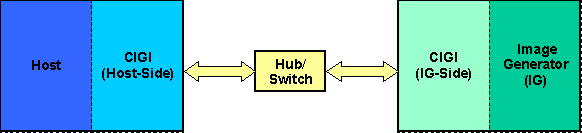
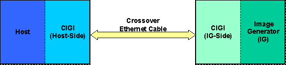

CIGI Host Emulator 3
|
CIGI Host Emulator 3 |
The Common Image Generator Interface (CIGI) is a standardized interface between a real-time simulator host and an image generator. CIGI is an open interface offered to promote commonality in the visual simulation industry.
CIGI is a data packaging protocol and thus does not depend upon a specific physical communications medium or transport protocol. Any suitable physical medium may be used, including Ethernet, Token Ring, optical fiber, shared memory, etc. The transport protocol(s) used should depend upon performance and what is appropriate to the communications hardware. This document assumes the use of the User Datagram Protocol (UDP) over Ethernet for ease of discussion.
The connection between the host computer, henceforth referred to as "Host," and the IG should be a dedicated bi-directional Ethernet connection, as illustrated in the diagrams below. The connection may be made using an Ethernet hub or switch, or using a single crossover cable (i.e. a patch cable with the transmit and receive signals crossed).

Connection Using Ethernet Hub/Switch

Connection Using Crossover Cable
This section contains the following topics:
|
© 2008 The Boeing Company |
rev 3.3.0 |